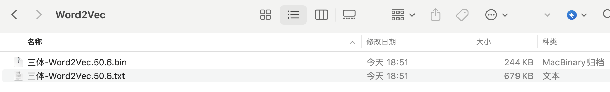
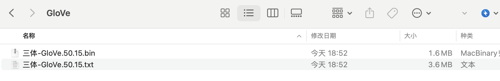
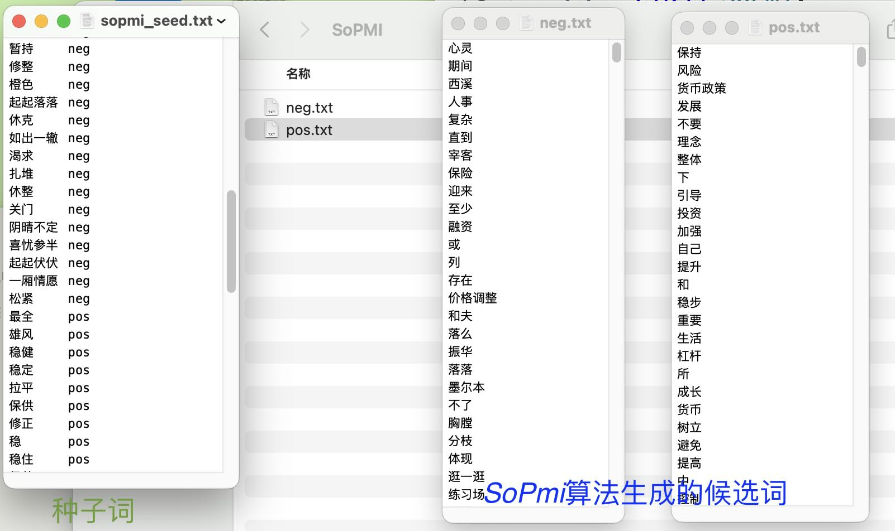
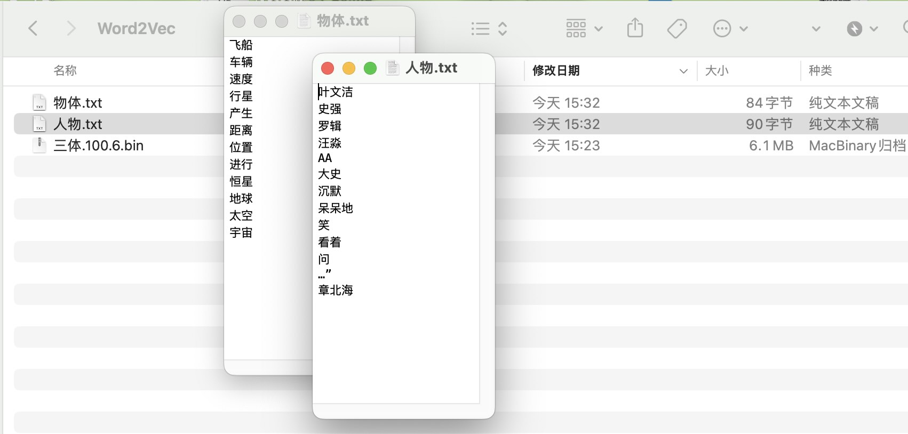

三、Model模块¶
本部分主要内容是词嵌入模型相关技术， 包括Word2Vec(GLove)的训练、读取、扩展词典。
模块 |
函数(类) |
功能 |
|---|---|---|
model |
ct.Word2Vec(corpus_file, encoding, lang, window_size, vector_size,...) |
训练Word2Vec |
model |
ct.GloVe(corpus_file, encoding, lang, window_size, vector_size, ...) |
训练GLove模型。 |
model |
ct.load_w2v(wv_path) |
读取cntext2.x训练出的Word2Vec/GloVe模型文件 |
model |
ct.glove2word2vec(glove_file, word2vec_file) |
将GLoVe模型.txt文件转化为Word2Vec模型.txt文件；注意这里的GLoVe模型.txt是通过Standfordnlp/GloVe 训练得到的。 |
model |
ct.expand_dictionary(wv, seeddict, topn=100) |
扩展词典, 结果保存到路径[output/Word2Vec]中 |
| model | ct.SoPmi(corpus_file, seed_file, lang='chinese') | 共现法扩展词典 |
3.1 Word2Vec()¶
可直接对原始语料txt文件进行自动Word2vec训练。该函数会自动处理文本预处理(分词、去停词)、内存管理、参数调整等问题，确保训练过程顺利进行。
在 gensim.models.word2vec.Word2Vec 基础上，增加了中英文的预处理， 简化了代码使用。配置好cntext2.x环境， 可以做到
训练只用一行代码
读取调用只用一行代码
ct.Word2Vec(corpus_file,
lang='chinese',
dict_file=None,
stopwords_file=None,
vector_size=100,
window_size=6,
min_count=5,
max_iter=5,
**kwargs)
corpus_file: 语料库文件的路径。
lang: 语言类型，支持 'chinese' 和 'english'，默认为 'chinese'。
dict_file: 自定义词典txt文件路径，默认为None。utf-8编码。
stopwords_file: 停用词文件路径，默认为 None。utf-8编码。
vector_size: 词向量的维度，默认为 50。
window_size: 上下文窗口的大小，默认为 6。
min_count: 最小词频，默认为 10。
max_iter: 最大迭代次数，默认为 5。
kwargs: 其他gensim可选参数，如negative、sample、hs等。
import cntext as ct
w2v = ct.Word2Vec(corpus_file = 'data/三体.txt',
lang = 'chinese',
window_size = 6,
vector_size = 50)
w2v
Run
Mac(Linux) System, Enable Parallel Processing
Cache output/三体_cache.txt Not Found or Empty, Preprocessing Corpus
Reading Preprocessed Corpus from output/三体_cache.txt
Start Training Word2Vec
Word2Vec Training Cost 10 s.
Output Saved To: output/Word2Vec/三体-Word2Vec.50.6.txt
[data/三体.txt]体积2.7M， 训练时间10s， 模型文件存储于 output/Word2Vec/三体-Word2Vec.50.6.txt

需要注意， ct.Word2Vec 函数十分吃内存， 使用的 2G 的中文语料txt文件， 几乎能吃满我服务器全部内存(256G内存,常见电脑内存多为8G、16G)， 出现 MemoryError 问题。 但同样的 2G 的中文语料， 运行 ct.GloVe 就轻松很多，很难出现 MemoryError。
3.2 GloVe()¶
使用Stanford GloVe代码工具训练GloVe模型。该函数会自动处理文本预处理、内存管理、参数调整等问题，确保训练过程顺利进行。
ct.GloVe(corpus_file, lang='chinese', dict_file=None, stopwords_file=None, vector_size=100, window_size=15, min_count=5, max_memory=4.0, max_iter=15, x_max=10)
corpus_file: 输入语料文件路径（文本格式）。该文件为分词后的语料文件。
lang: 语料文件的语言类型，默认为 'chinese'。
dict_file: 自定义词典txt文件路径，默认为None。utf-8编码。
stopwords_file: 停用词文件路径，默认为 None。utf-8编码。
vector_size: 词向量维度，默认 100。
window_size: 上下文窗口大小，默认 15。
min_count: 忽略出现次数低于此值的单词，默认 5。
max_memory: 可供使用的最大内存大小，单位为GB，默认 4; 该参数越大，训练越快。
max_iter: 训练的最大迭代次数，默认 15。
x_max: 共现矩阵中元素的最大计数值，默认 10。
ct.GloVe内置 Stanford GloVe算法， 训练速度非常快。
import cntext as ct
glove = ct.GloVe(corpus_file='data/三体.txt',
lang='chinese',
vector_size=50,
window_size=15)
glove
Run
Mac(Linux) System, Enable Parallel Processing
Cache output/三体_cache.txt Not Found or Empty, Preprocessing Corpus
Start Training GloVe
BUILDING VOCABULARY
Using vocabulary of size 6975.
COUNTING COOCCURRENCES
Merging cooccurrence files: processed 2106999 lines.
Using random seed 1743474106
SHUFFLING COOCCURRENCES
Merging temp files: processed 2106999 lines.
TRAINING MODEL
Read 2106999 lines.
Using random seed 1743474106
04/01/25 - 10:21.46AM, iter: 001, cost: 0.055981
04/01/25 - 10:21.46AM, iter: 002, cost: 0.050632
......
04/01/25 - 10:21.48AM, iter: 014, cost: 0.030047
04/01/25 - 10:21.48AM, iter: 015, cost: 0.029100
GloVe Training Cost 9 s.
Output Saved To: output/三体-GloVe.50.15.txt
<gensim.models.keyedvectors.KeyedVectors at 0x331517440>

训练生成的 output/GloVe/三体-GloVe.50.15.txt 可用 ct.load_w2v 读取，在后面会有展示。
3.3 SoPmi()¶
ct.SoPmi(corpus_file, seed_file) #人工标注的初始种子词
corpus_file 语料txt文件路径
seed_file 初始种子词txt文件路径
共现法
import cntext as ct
ct.SoPmi(corpus_file='data/sopmi_corpus.txt',
seed_file='data/sopmi_seed.txt') # 人工标注的初始种子词
Run
Step 1/4:...Preprocess Corpus ...
Step 2/4:...Collect co-occurrency information ...
Step 3/4:...Calculate mutual information ...
Step 4/4:...Save candidate words ...
Finish! used 19.74 s

3.4 load_w2v()¶
导入cntext2.x 预训练的word2vec模型 .txt文件
ct.load_w2v(w2v_path)
w2v_path 模型文件路径
读取 output/三体.100.6.txt 模型文件, 返回 gensim.models.word2vec.Word2Vec 类型。
import cntext as ct
santi_w2v = ct.load_w2v(w2v_path='output/三体-Word2Vec.50.6.bin')
# santi_w2v = ct.load_wv(wv_path='output/三体-Word2Vec.50.6.txt')
santi_glove = ct.load_w2v(w2v_path='output/三体-GloVe.50.15.bin')
# santi_glove = ct.load_wv(wv_path='output/三体-GloVe.50.15.bin')
santi_w2v
Run
Loading output/三体-Word2Vec.50.6.bin...
Loading output/三体-GloVe.50.15.bin...
<gensim.models.keyedvectors.KeyedVectors at 0x33aa9cf80>
3.5 glove2word2vec()¶
将GLoVe模型.txt文件转化为Word2Vec模型.txt文件； 除非从网络下载的GloVe模型资源， 否则一般情况用不到这个函数。
ct.glove2word2vec(glove_file, word2vec_file)
glove_file: GLoVe模型.txt文件路径
word2vec_file: Word2Vec模型.txt文件路径
注意这里的GLoVe模型.txt是通过Standfordnlp/GloVe 训练得到的
import cntext as ct
ct.glove2word2vec(glove_file='data/GloVe.6B.50d.txt',
word2vec_file='output/word2vec_format_GloVe.6B.50d.txt')
注意¶
ct.load_w2v() 导入后得到的数据类型是 gensim.models.keyedvectors.KeyedVectors 。
gensim.models.word2vec.Word2Vec 可以转化为 gensim.models.keyedvectors.KeyedVectors ，
3.6 expand_dictionary()¶
ct.expand_dictionary(wv, seeddict, topn=100)
wv 预训练模型，数据类型为 gensim.models.keyedvectors.KeyedVectors。
seeddict 参数类似于种子词；格式为PYTHON字典；
topn 返回topn个语义最接近seeddict的词
根据设置的seeddict, 可按类别扩展并生成对应的词典txt文件， txt文件位于[output]文件夹内。
seeddict = {
'人物': ['叶文洁', '史强', '罗辑'],
'物体': ['飞船', '车辆']
}
ct.expand_dictionary(wv=santi_w2v.wv,
seeddict=seeddict,
topn=10)
